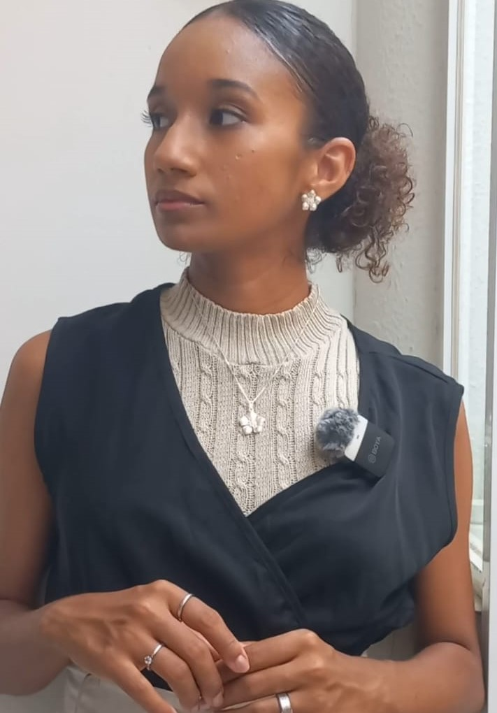

Por que você repete os mesmos erros financeiros mesmo querendo mudar

Você promete que desta vez vai ser diferente. Vai se organizar. Vai controlar. Mas, semanas depois, tudo volta ao mesmo lugar.
Talvez você se veja comprando uma planilha nova, baixando aplicativos de finanças ou até criando metas ambiciosas para o mês, mas logo percebe que gastou em coisas que nem precisava e sente culpa. Isso não acontece porque você é fraca ou desleixada — acontece porque **dinheiro não é só matemática, é comportamento**.
Você não gasta só com coisas
Gastar dinheiro muitas vezes está ligado a emoções e necessidades internas:
- Aliviar ansiedade;
- Recompensar-se por esforços;
- Sentir-se pertencente a um grupo;
- Ter uma sensação de segurança temporária.
Enquanto esses padrões não forem identificados, nenhuma planilha, aplicativo ou método de orçamento vai resolver o problema. É como tentar consertar um carro sem entender o que está quebrado no motor.
Sem consciência, todo método falha
Mudar apenas a ferramenta, sem trabalhar o comportamento, é como trocar de dieta sem mudar a relação com a comida. Funciona por um tempo, mas logo você volta ao mesmo ciclo.
Uma estratégia mais eficiente é começar pela **autoconsciência financeira**. Pergunte-se:
- Quais emoções me levam a gastar sem necessidade?
- Que situações me fazem sentir que preciso comprar algo para estar “no controle”?
- Como posso substituir esse hábito por ações mais conscientes?
Essas perguntas ajudam a entender o “porquê” por trás do gasto e criam a base para decisões financeiras mais conscientes.
Se o dinheiro sempre vira estresse…
O problema não é falta de controle ou disciplina. É falta de clareza emocional sobre como você usa o dinheiro e sobre o que ele significa na sua vida.
Existe uma forma mais leve de organizar
Quando você entende **por que gasta**, fica muito mais fácil decidir **como gastar**. E esse é o primeiro passo para criar finanças que não te deixam em alerta o tempo todo.
Aqui estão algumas estratégias simples que ajudam a começar:
- Anote apenas os gastos que impactam suas metas financeiras mais importantes.
- Revise seus gastos semanalmente, não diariamente, para reduzir pressão excessiva.
- Automatize pagamentos de contas fixas para evitar estresse desnecessário.
- Reserve pequenas recompensas conscientes para manter a motivação sem culpa.
Esses passos simples ajudam a transformar o dinheiro de um inimigo em aliado, criando **clareza e liberdade financeira**.
👉 Finanças leves: como organizar seu dinheiro sem viver em alerta
✨ Dinheiro organizado é dinheiro que trabalha a seu favor.